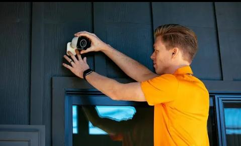
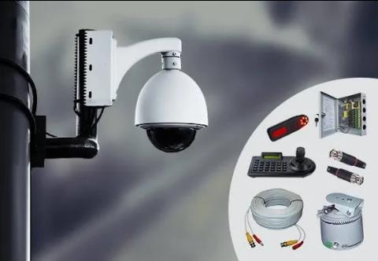

H @ H ELECTRONICS
Home Page
Contacts
Welcome to H@H Electronics – Your Premier Destination for Expert DSTV Installations and Beyond!

At H@H Electronics, we take pride in being the go-to solution for all your DSTV needs in Johannesburg, Gauteng Region, and throughout the
entire country of South Africa. With a commitment to excellence, unmatched technical expertise, and a passion for delivering
top-notch services, we are your trusted partner in the world of satellite and entertainment technology.
Our Services:

DSTV Installations and Settings:

Whether you're a new subscriber or looking to upgrade your existing system, our skilled technicians ensure seamless DSTV installations and
optimal settings tailored to your preferences.
Satellite Refocusing:

Count on us to fine-tune your satellite alignment for crystal-clear reception. Our technicians are equipped with the latest tools and
technology to ensure your viewing experience is never compromised.
DSTV Explora HDPVR Upgrades:

Stay ahead in the world of digital entertainment with our DSTV Explora HDPVR upgrades. Enjoy enhanced features, superior picture quality,
and a world of entertainment at your fingertips.
Complex DSTV Fibre Installations:

Embrace the future of connectivity with our specialized DSTV fibre installations. We cater to complex setups, ensuring a seamless
integration of DSTV services into fibre-optic networks.
OVDH Satellite Installations:

Experience the next level of satellite technology with our OVDH satellite installations. Our technicians are well-versed in the intricacies
of these advanced systems, providing you with unparalleled service.
TV Wall Mounting and Ceiling Mounting:

Enhance your viewing experience by opting for our professional TV wall mounting and ceiling mounting services. Our experts ensure secure
and aesthetically pleasing installations, transforming your space into an entertainment haven.
LNB Replacement Services:

If you're experiencing signal issues or need to upgrade your LNB, our technicians are at your service. We offer swift and efficient LNB
replacement services to keep your DSTV system performing at its best.
Why Choose H@H Electronics?
Expert Technicians: Our team consists of highly skilled and certified technicians with years of experience in the field.
Quality Service: We prioritize quality in every aspect of our service, ensuring that your DSTV system functions flawlessly.
Customer Satisfaction: Your satisfaction is our top priority. We are dedicated to meeting and exceeding your expectations with every
service we provide.
Wide Coverage Area: Serving Johannesburg, Kempton Park, and the entire East Rand, we bring our expertise to your doorstep.
Choose H@H Electronics for a seamless, reliable, and unmatched DSTV experience. Contact us today for all your satellite and entertainment
needs!
Electronics – Your Trusted Partner in CCTV Solutions for East Rand and Kempton Park!
At H@H Electronics, we specialize in providing top-notch CCTV camera installations and refocusing services in the East Rand area and Kempton Park. With a dedication to security and technological excellence, we bring peace of mind to homes and businesses through our expert surveillance solutions.

Our CCTV Installation Services:

CCTV Camera Installations: Our skilled technicians design and implement custom CCTV camera installations tailored to your specific security
needs. From residential properties to commercial spaces, we ensure comprehensive coverage and optimal performance.
Refocusing Services: Keep your surveillance system at its best with our refocusing services. Our technicians are equipped to fine-tune your
CCTV cameras, ensuring clear and precise monitoring of your premises.

Why Choose H@H Electronics?
Expertise: With a team of experienced technicians, we bring unparalleled expertise to every CCTV installation and refocusing project.
Tailored Solutions: We understand that each property has unique security requirements. Our solutions are customized to meet your specific
needs and concerns.

Quality Assurance: H@H Electronics is committed to delivering high-quality CCTV solutions that provide reliable and effective security for
your peace of mind.
Local Presence: Based in East Rand and Kempton Park, we are your local partners in ensuring the safety and security of your surroundings.
Choose H@H Electronics for professional CCTV camera installations and refocusing services. Safeguard your property with cutting-edge
surveillance technology. Contact us today for a consultation!
Services
- DSTV Installation
- Satelite Dish refocus
- DSTV Cables
- DSTV set
- Single View Upgrade
- LNB Replacement
- CCTV Installations
- CCTV refocus
- CCTV monitoring set